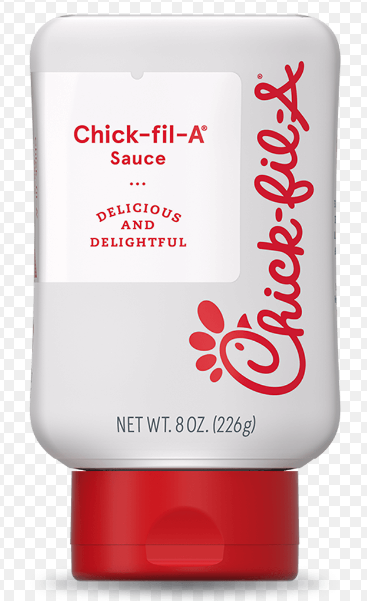

Chick Fil A Sauce

Chick-fil-A sauce is a delicious, tangy, and slightly sweet sauce that is
the perfect accompaniment to any chicken dish.
Ingredients
- 1/2 cup mayonnaise
- 2 tablespoons yellow mustard
- 1/4 cup honey
- 1 tablespoon Dijon mustard
- 2 teaspoons lemon juice
- 1/4 teaspoon paprika
- 1/4 teaspoon garlic powder
- 1/4 teaspoon onion powder
Instructions
-
In a small bowl, whisk together the mayonnaise, yellow mustard, honey,
Dijon mustard, and lemon juice until well combined.
-
Add in the paprika, garlic powder, and onion powder, and whisk until
everything is fully incorporated.
-
Taste the sauce and adjust the seasoning as needed, adding more salt,
pepper, or honey to taste.
-
Cover the sauce and refrigerate for at least 30 minutes to allow the
flavors to meld together.
Home